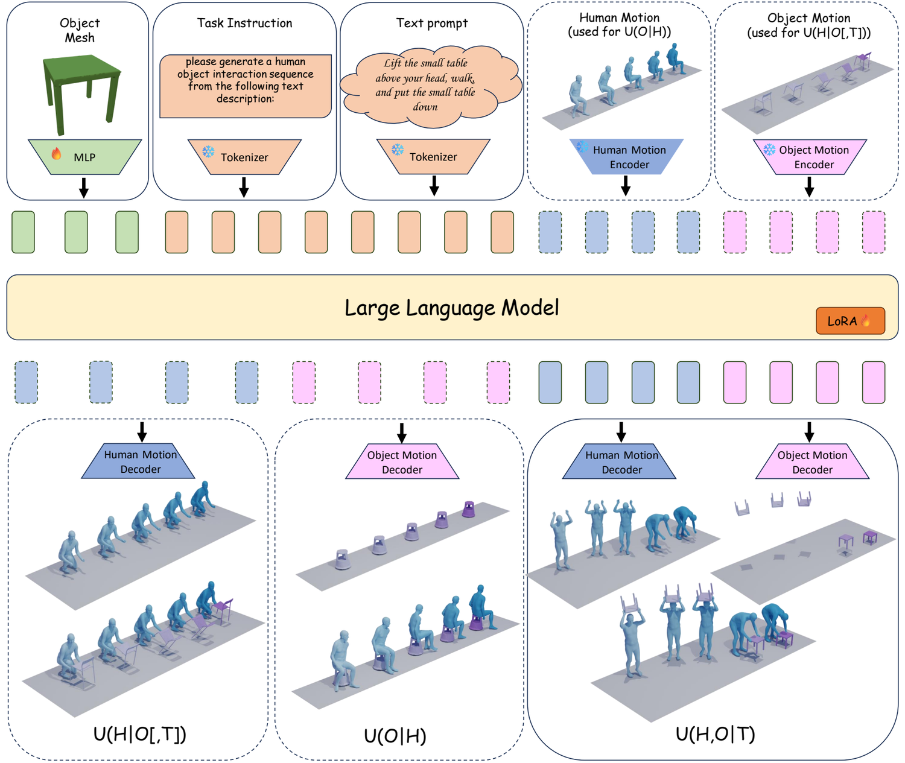
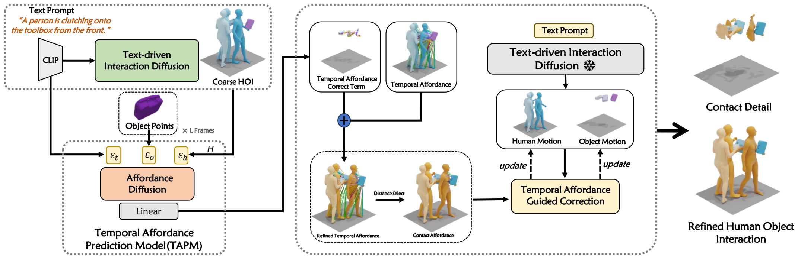

Uni-HOI: A Unified Framework for Learning the Joint Distribution of Text and Human-Object Interaction
ACM International Conference on Multimedia (ACM MM), 2026CCF-AFirst author

M.S. Student in Photogrammetry and Remote Sensing
LIESMARS, Wuhan University
I am a Master's student in Photogrammetry and Remote Sensing at LIESMARS, Wuhan University (2024–2027). My research interests are computer vision, digital human motion and interaction generation, and multimodal large language models.
Before that, I received my B.Eng. in Geomatics from Central South University in 2024, where I ranked 4/70 (top 5.7%) and received the National Inspiration Scholarship for three consecutive years.
I am open to full-time positions in multimodal LLMs, computer vision and embodied AI.
Uni-HOI: A Unified Framework for Learning the Joint Distribution of Text and Human-Object Interaction
ACM International Conference on Multimedia (ACM MM), 2026CCF-AFirst author

TAG-HOI: Temporal Affordance Guided 3D Human-Object Interaction Generation with Dynamic Contact
IEEE Transactions on Circuits and Systems for Video Technology (TCSVT), under reviewCCF-BFirst author

Multimodal LLM Algorithm Intern
Large Language Model Algorithm Intern
LIESMARS (State Key Laboratory of Information Engineering in Surveying, Mapping and Remote Sensing) · admitted through recommendation without entrance examination
Weighted average 90.52/100 · major rank 4/70 (top 5.7%) · CET-4 573 / CET-6 526